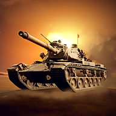

HİSAR / ORTAK HİKÂYE

KURULUŞ
Üssünü kur. Birliğini hazırla.
Görevden birlikte dön.
Serbest Alanlar
Bütün araçlar, tank kabinleri, hedefler ve mevcut oyunlar korunur. Hikâyeyi ilerletmeden de gezebilirsin.
Tek görev listesi · Bölüm başına tek amaç · Yatay, iki elli kumanda
Bu sürüm mevcut üç alanı sahne geçişleriyle birleştirir; kesintisiz tek arazi değildir.